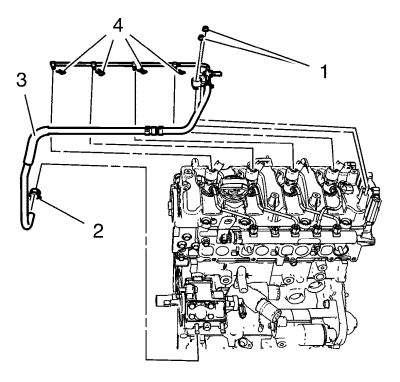
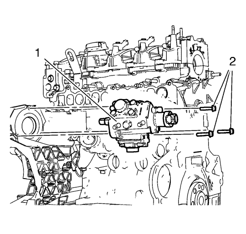

Sustitución de la bomba de inyección de combustible
Herramientas especiales
EN-6015 Kit de tapones para tuberías de combustible
Si desea informarse sobre herramientas regionales equivalentes, consultar Herramientas especiales .
Procedimiento de desmontaje
- Retire la correa dentada. Consultar Sustitución de la correa de distribución .
- Desmonte la polea de accionamiento de la bomba de combustible. Consultar Desmontaje de la polea de accionamiento de la bomba de inyección de combustible .
- Retire el tubo flexible de alimentación de combustible. Consultar Sustitución del tubo flexible de combustible: de la bomba de inyección de combustible al bloque de alimentación de combustible .

- Retire la abrazadera del tubo flexible (1).
- Desmonte el tubo flexible (3) de la bomba de inyección de combustible.
- Monte el tapón EN-6015 para sellar el tubo flexible y la bomba de inyección de combustible.
- Desmonte el colector de admisión. Consultar Sustitución del colector de admisión .

- Retire los 3 tornillos (2) de la bomba de combustible.
- Desmonte la bomba de combustible (1).
Procedimiento de montaje
Nota: No sople aire en una bomba de inyección con una pistola de aire. Si está sucio, límpielo con papel aceitado.
- Monte la bomba de combustible (1).
Precaución:Consulte Precaución con las fijaciones en la sección Prólogo.
- Monte los 3 tornillos de la bomba de combustible (2) y apriételos a 30 N·m (23 lib. pie).
- Monte el colector de admisión. Consultar Sustitución del colector de admisión .
- Quite el tapón EN-6015.
- Monte el tubo flexible (3) en la bomba de inyección de combustible.
- Monte la abrazadera del tubo flexible (1).
- Monte el tubo de alimentación de combustible. Consultar Sustitución del tubo flexible de combustible: de la bomba de inyección de combustible al bloque de alimentación de combustible .
- Monte la polea de accionamiento de la bomba de combustible. Consultar Montaje de la polea de accionamiento de la bomba de inyección de combustible .
- Monte la correa de distribución. Consultar Sustitución de la correa de distribución .
| © Copyright Chevrolet. Reservados todos los derechos |